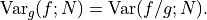

Monte Carlo Integration¶
This chapter describes the VEGAS Monte Carlo integration method.
Introduction¶
The VEGAS algorithm of Lepage is based on importance sampling. It samples points from the probability distribution described by the function , so that the points are concentrated in the regions that make the largest contribution to the integral.
In general, if the Monte Carlo integral of  is sampled with points distributed according to a probability distribution described by the function
is sampled with points distributed according to a probability distribution described by the function  , we obtain an estimate ,
, we obtain an estimate ,
with a corresponding variance,

If the probability distribution is chosen as  then it can be shown that the variance textrm{Var}_g(f; N) vanishes, and the error in the estimate will be zero. In practice it is not possible to sample from the exact distribution g for an arbitrary function, so importance sampling algorithms aim to produce efficient approximations to the desired distribution.
The VEGAS algorithm uses a fixed number of calls to evaluate the integral.
The VEGAS algorithm approximates the exact distribution by making a number of passes over the integration region while histogramming the function . Each histogram is used to define a sampling distribution for the next pass. Asymptotically this procedure converges to the desired distribution. In order to avoid the number of histogram bins growing like the probability distribution is approximated by a separable function: so that the number of bins required is only . This is equivalent to locating the peaks of the function from the projections of the integrand onto the coordinate axes. The efficiency of VEGAS depends on the validity of this assumption. It is most efficient when the peaks of the integrand are well-localized. If an integrand can be rewritten in a form which is approximately separable this will increase the efficiency of integration with VEGAS.
then it can be shown that the variance textrm{Var}_g(f; N) vanishes, and the error in the estimate will be zero. In practice it is not possible to sample from the exact distribution g for an arbitrary function, so importance sampling algorithms aim to produce efficient approximations to the desired distribution.
The VEGAS algorithm uses a fixed number of calls to evaluate the integral.
The VEGAS algorithm approximates the exact distribution by making a number of passes over the integration region while histogramming the function . Each histogram is used to define a sampling distribution for the next pass. Asymptotically this procedure converges to the desired distribution. In order to avoid the number of histogram bins growing like the probability distribution is approximated by a separable function: so that the number of bins required is only . This is equivalent to locating the peaks of the function from the projections of the integrand onto the coordinate axes. The efficiency of VEGAS depends on the validity of this assumption. It is most efficient when the peaks of the integrand are well-localized. If an integrand can be rewritten in a form which is approximately separable this will increase the efficiency of integration with VEGAS.
VEGAS incorporates a number of additional features, and combines both stratified sampling and importance sampling. The integration region is divided into a number of “boxes”, with each box getting a fixed number of points (the goal is 2). Each box can then have a fractional number of bins, but if the ratio of bins-per-box is less than two, VEGAS switches to a kind variance reduction (rather than importance sampling).
Errors and consistency¶
The VEGAS algorithm computes a number of independent estimates of the integral internally, and returns their weighted average. Random sampling of the integrand can occasionally produce an estimate where the error is zero, particularly if the function is constant in some regions. An estimate with zero error causes the weighted average to break down and must be handled separately. In the original FORTRAN implementations of VEGAS, the error estimate is made non-zero by substituting a small value (typically 1e-30). The implementation in GSL differs from this and avoids the use of an arbitrary constant – it either assigns the value a weight which is the average weight of the preceding estimates or discards it according to the following procedure,
current estimate has zero error, weighted average has finite error
The current estimate is assigned a weight which is the average weight of the preceding estimates.
current estimate has finite error, previous estimates had zero error
The previous estimates are discarded and the weighted averaging procedure begins with the current estimate.
current estimate has zero error, previous estimates had zero error
The estimates are averaged using the arithmetic mean, but no error is computed.
The convergence of the algorithm can be tested using the overall chi-squared value of the results. A value which differs significantly from 1 indicates that the values from different iterations are inconsistent. In this case the weighted error will be underestimated, and further iterations of the algorithm are needed to obtain reliable results.
The VEGAS algorithm uses a fixed number of calls to evaluate the integral. It is possible to call the continuation function, which is returned by num.vegas_integ(), with a higher number of calls to increase the accuracy of the result. Keep in mind that reducing  by a certain factor typically increases the number of calls quadratically, because .
by a certain factor typically increases the number of calls quadratically, because .
Functions¶
- vegas_integ(f, a, b[, calls, options])¶
Use the VEGAS Monte Carlo algorithm to integrate the function
fover theN-dimensional hypercubic region defined by the lower and upper limits in the vectorsaandb(assuming 1-based indexing). The integration uses a fixed number of function callscalls, as opposed to a target precision. The optionaloptionstable can contain the fields- r
The VEGAS integrator obtains random sampling points using the
rngrandom number generatorr. By default, the built-in math.random() of LuaJIT2 is used.- chidev (default: 0.5)
chidevis the tolerated deviation from 1 of the chi-squared per degree of freedom for the weighted average. This quantity must be consistent with 1 for the weighted average to be reliable.- warmup (default: 1e4)
Number of function calls that is used to “warm up” the grid; i.e. to do a first estimate of the ideal probability distribution.
It returns the result of the integration, the error estimate and the number of runs needed to reach the desired chi-squared. The fourth return value is a continuation function that takes a number of calls as an argument. This function can be invoked to recalculate the integral with a higher number of calls, to increase precision. The continuation function returns the new result, error and number of runs. Note that this function discards the previous results, but retains the optimized grid. Typically the continuation function is called with a multiple of the original number of calls, to reduce the error.
- num.vegas_prepare(spec)¶
Prepare a VEGAS Monte Carlo integrator,
vegas_integ.specis a table which can contain the following fields:N (required) Number of dimensions of the function you want to integrate.
K (optional, default: 50) Maximum number of bins, which should be an even, positive number.
MODE (optional, default: 1) Integration mode, which can be any of 1) importance (dynamic switching to stratified), 2) importance only and 3) stratified sampling.
ITERATIONS (optional, default: 5) The result of the integration is based on a weighted average of
ITERATIONSindependent samples. For each integration, the number of function calls used iscalls/ITERATIONS.ALPHA (optional, default: 1.5) Grid flexibility for rebinning, typically between 1 and 2. Higher is more adaptive, 0 is rigid.
Usage example¶
The subject of statistical physics features many intractable multiple integrals. One example of such an integral is the partition function of a real (interacting) gas. The partition function is an essential quantity in statistical physics, from which other quantities such as the free energy and the pressure can be derived. In the case of an ideal (non-interacting) gas, the partition function factorizes to a product of single integrals. In a real gas, the interactions introduce correlations between the particles, and the multiple integral no longer factorizes. The partition function for a system with a temperature  , a volume
, a volume  and a number of particles
and a number of particles  assumes the following form:
assumes the following form:
The integral over the momenta  factorizes, but the presence of the potential prevents the integral over the coordinates to be written as a product of single integrals. This integral is called the configurational partition function:
factorizes, but the presence of the potential prevents the integral over the coordinates to be written as a product of single integrals. This integral is called the configurational partition function:
so that  .
.
Using the VEGAS algorithm, we can perform a naive calculation of for a one-dimensional box containing 5 particles with a Gaussian repulsive interaction:
local exp = math.exp
local T,V,N = 2,100,5
-- the potential between two particles
local U = |r1,r2| 0.1*exp(-(r1-r2)^2/2)
-- the Boltzmann factor exp(-E/kT)
local function boltzmann(p)
local Epot = 0
for i=1,N do
for j=1,i-1 do -- i>j avoids counting pairs twice
Epot = Epot + U(p[i],p[j])
end
end
return exp(-Epot/T)
end
-- set the lower and upper boundaries
local lo,hi = {},{}
for i=1,N do lo[i],hi[i] = 0,V end
-- prepare integrator
local vegas_integ = num.vegas_prepare({N=N})
-- calculate the integral and print the results
local res,sig,num,cont = vegas_integ(boltzmann,lo,hi,1e5)
io.write("Q(T=",T,",V=",V,",N=",N,") = ",res/V^N," +/- ",sig/V^N,"\n")